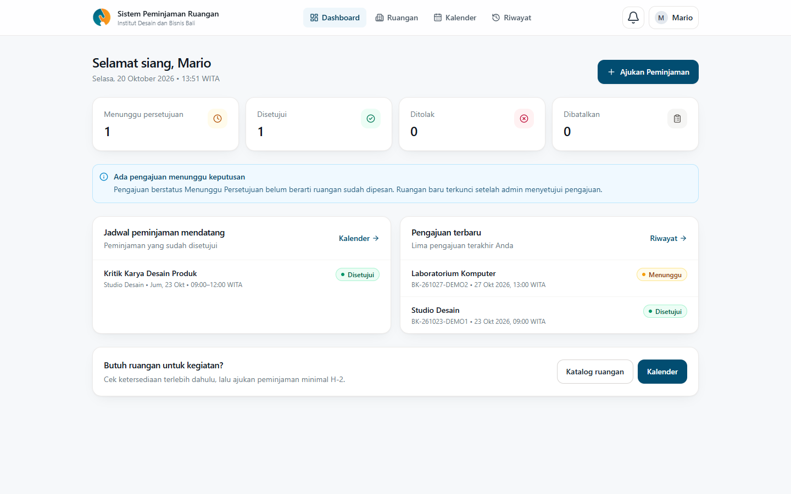
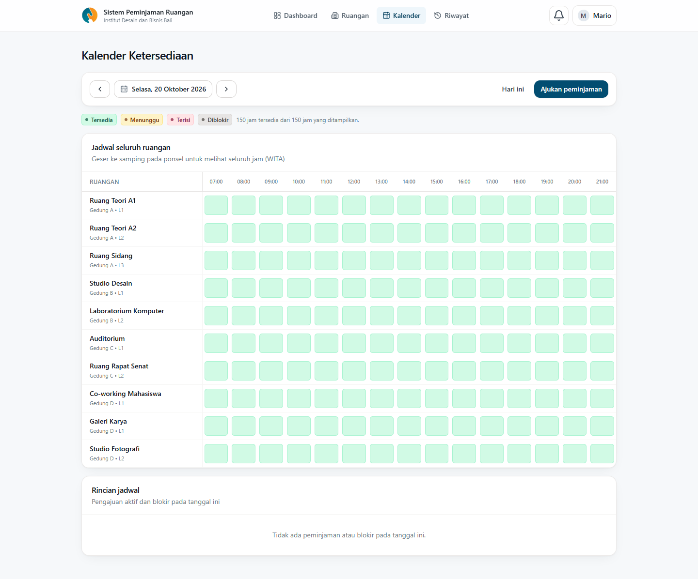
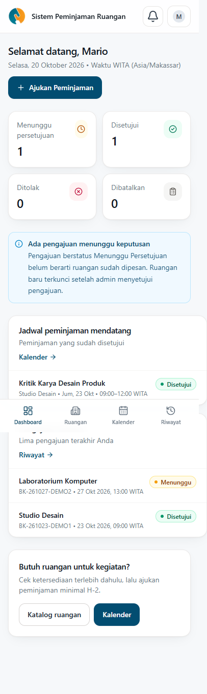
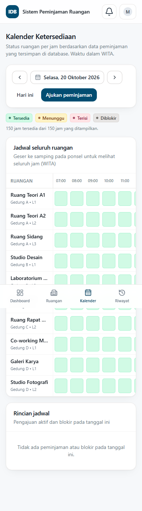
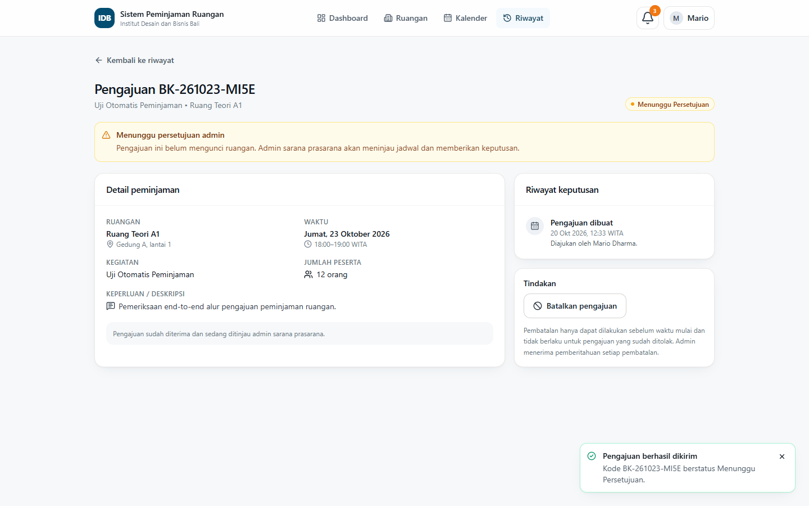
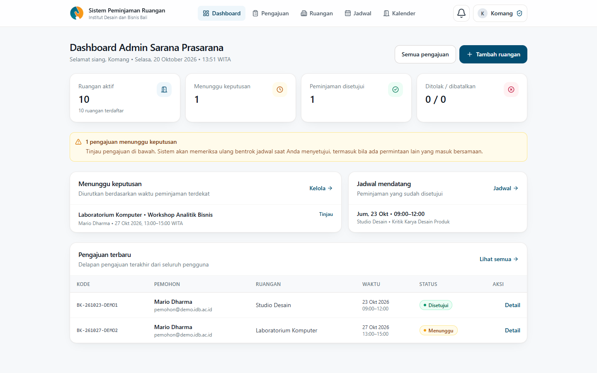

Katalog ruangan
Nama, gedung, lantai, kapasitas, dan fasilitas setiap ruangan, lengkap dengan detail per ruangan.
 IDB Bali
IDB Bali
Sistem Peminjaman Ruangan
Aplikasi web untuk sivitas akademika Institut Desain dan Bisnis Bali: melihat ketersediaan ruangan, mengajukan peminjaman, dan memantau keputusan admin — tanpa jadwal yang bertabrakan. Semua waktu ditampilkan dalam WITA.

Dibangun untuk kebutuhan nyata peminjaman ruangan kampus, bukan sekadar halaman statis.
Nama, gedung, lantai, kapasitas, dan fasilitas setiap ruangan, lengkap dengan detail per ruangan.
Status per jam untuk seluruh ruangan: hijau tersedia, kuning menunggu, merah terisi, abu-abu diblokir.
Formulir dengan validasi lengkap, ringkasan sebelum kirim, dan saran jadwal alternatif saat bentrok.
Admin menyetujui atau menolak dengan alasan wajib. Keputusan langsung tampil di dashboard pemohon.
Pemohon dan admin dipisahkan di server. Setiap endpoint diperiksa; data pengajuan hanya untuk pemilik dan admin.
Filter status dan pencarian, detail keputusan, serta pembatalan oleh pemohon sesuai ketentuan.
Antarmuka mobile-first dengan navigasi sederhana, status berwarna konsisten, dan tabel yang nyaman di ponsel.





Tiga langkah dari pengajuan sampai ruangan siap dipakai.
Cek kalender, pilih slot yang tersedia, lalu isi kegiatan, jumlah peserta, dan keperluan.
Sistem memeriksa ulang bentrok jadwal saat admin menyetujui. Penolakan wajib disertai alasan.
Setelah disetujui, slot berubah merah di kalender. Pembatalan mengembalikan ketersediaan ruangan.
Pencegahan jadwal bentrok tidak bergantung pada tampilan. Pemeriksaan dilakukan pada transaksi database dengan penguncian per ruangan, ditambah constraint PostgreSQL agar dua peminjaman disetujui tidak dapat menempati waktu yang sama.